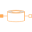
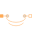

FixedShapeFlux tubes with fixed shape during simulation and linear material characteristics |
|
Package Contents
|
Flux tube with fixed cross-section, fixed length and linear material characteristics |
|
|
Flux tube with rectangular cross-section of fixed shape and linear material characteristics |
|
|
(Hollow) cylinder with axial flux of fixed shape and linear material characteristics |
|
|  |
Hollow cylinder with radial flux of fixed shape and linear material characteristics |
|
HollowCylinderCircumferentialFlux Hollow cylinder with circumferential flux; fixed shape |
|
|  |
Toroid with circular cross section; fixed shape |
Information
This information is part of the Modelica Standard Library maintained by the Modelica Association.
This package provides different reluctance models, based on different geometric data.